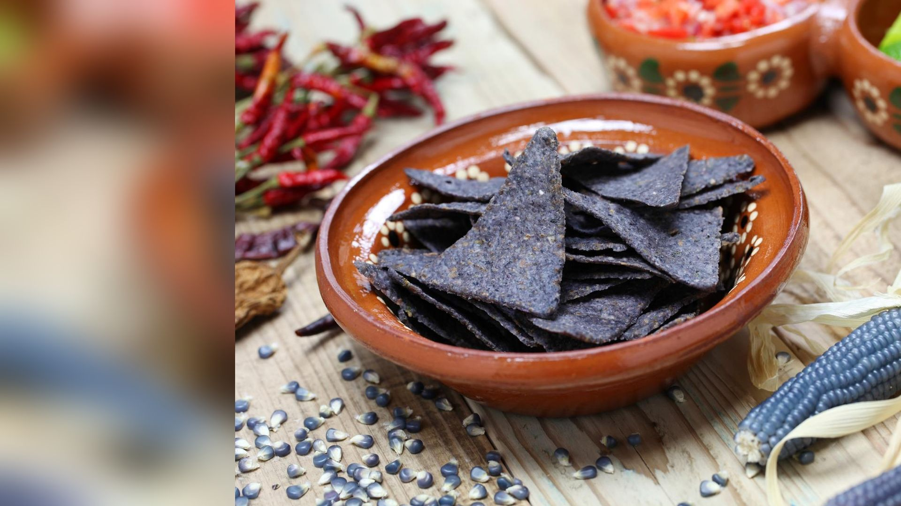

Class Exercise 20
Nine Indigenous practices, then a pair challenge: the Eighth Fire stress test.
Enter today's code
Your instructor shows a code on screen at the start of class. Checking in counts toward your participation grade.
Learn from the practices, then test an idea
Nine practices
Pick a practice. Tap to read the case, the facts and the linkages from the Washington Post article. Then write 3 or 4 sentences on how it supports sustainability.
The Eighth Fire stress test
A made-up Patagonia pledge for Indigenous youth. Work through four steps with a partner, then vote in a class poll.
Source for Exercise 1: Samuel Gilbert, “Nine practices from Native America culture that could help the environment,” The Washington Post, April 22, 2024.
Nine practices, one self-check
Pick a practice. Tap the three icons to read the case, the facts and the linkages. Then tap the pencil.
Explain the sustainability application
In 3 or 4 sentences, explain how this practice supports sustainability. Use at least one fact from the article.
A pledge, a company and a test
- Gives 1% of total sales to grassroots environmental groups.
- Transferred 98% of its nonvoting stock to the Holdfast Collective, which directs profits to climate and conservation work.
- That work includes Indigenous-led efforts such as the Home Planet Fund.
Patagonia’s leaders propose a new Seventh-to-Eighth Fire Initiative. It sets aside 10% of yearly net profit for Indigenous youth programs: land-based education, apprenticeships in traditional ecological knowledge, and outdoor leadership.
Work in pairs through four steps (about 12 minutes). Then a class poll (about 6 minutes).
In Nelson’s chapter, it means going back to pick up the relational wisdom we left behind. “Seventh Fire” here means the usual way: helpful giving that leaves the system as it was.
Company facts as supplied by your instructor. The 10% initiative is a made-up scenario for this exercise, not a real Patagonia plan.
1. Spot the linear default
In standard corporate social responsibility (CSR), how do companies usually treat a 10% profit pledge? Think of tax write-offs, brand marketing or top-down reporting.
Name one common business assumption that treats Indigenous youth as charity recipients, not as kin or rights-holders.
2. Pick up what was left behind
In Nelson’s chapter, the Eighth Fire means retracing our steps to recover relational wisdom that was left behind. What traditional ways of governing or caring for land are missing from standard corporate giving?
Name two practices the 10% fund should support that business school models usually ignore. For example: caring for land across generations, reviving language and stories, or seasonal harvest cycles.
3. Redesign the governance
If Patagonia’s board picks which youth groups get the money and uses Western money KPIs, is that the Eighth Fire or still the Seventh Fire?
Pick one answer below, then write one clear rule for how the 10% is governed. For example: an Indigenous Youth Advisory Council holds the final say, or multi-year grants with no strings.
4. Spot the core business tension
Can a company light the Eighth Fire with 10% of its profits if the other 90% of its work still depends on global apparel manufacturing, synthetic fibers and constant buying?
Write one sharp question a skeptical community elder might ask Patagonia’s CEO about the gap between the 10% pledge and the 90% core business.